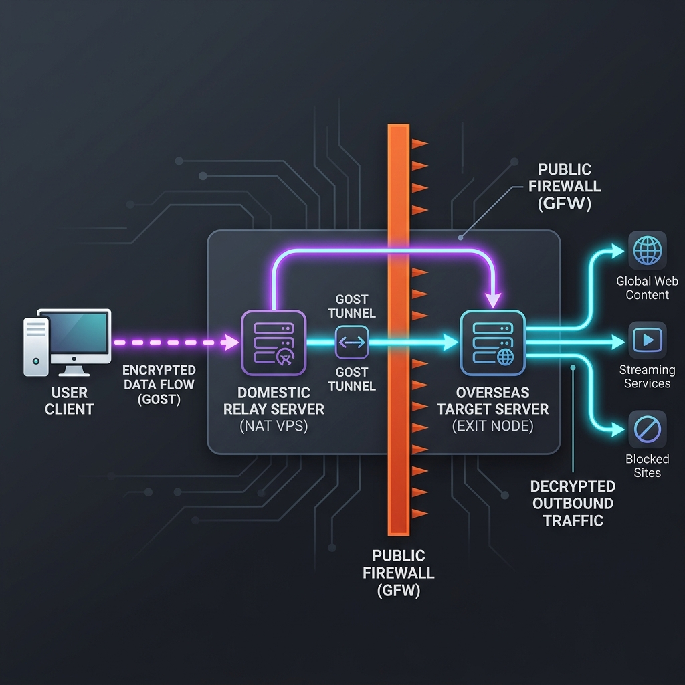

对于需要流畅观看 4K 流媒体、跨境电商网络办公或是跨国在线游戏的深度“科学上网”用户来说，最令人头痛的不是带宽不够，而是延迟过高、抖动强烈以及随机丢包。在晚高峰时期（晚上 8 点至 11 点），由于国内三大运营商的国际出口带宽饱和，直连节点的速度会断崖式下跌，甚至直接超时断联。
既然商业级的中转专线机场价格较高，那么有没有一种高性价比的平替方案？答案就是：利用国内廉价 NAT VPS 或是轻量服务器自建中转节点。通过这种方案，你可以使用百元内的预算，将普通的直连节点或二线机场节点，物理层面上变成“低延迟专线”。本篇文章将手把手教你如何利用 Gost 隧道和可视化极光面板快速构建一套高可用的家庭私有中转系统。
一、 什么是中转？它的底层加速原理
在深入配置之前，我们先来看看流量是如何流经中转节点的。
直连网络拓扑：
你的本地设备 → 运营商本地公网宽带 (晚高峰极端拥堵) → GFW 国际出口 (丢包) → 境外落地节点
中转网络拓扑：
你的本地设备 → 国内前置中转服务器 (高吞吐、省内直达) → 加密隧道 (Gost TLS) → 境外落地节点

中转服务器通常租用在网络品质极高、线路平稳的骨干网旁路机房（如深圳移动、徐州联通、上海电信 BGP 等）。当你发起请求时，流量仅以极短的物理距离（如省内几毫秒的延迟）发送给国内中转机。随后，国内中转机通过性能优秀的专业机房带宽将流量定向投送至海外落地服务器，由于机房的骨干网和海外互联通道质量好，丢包率极低，你的最终使用体验甚至能与昂贵的 IPLC专线 媲美。
二、 自建中转的前期设备准备
自建中转需要租用两台设备：
-
国内入口节点（国内中转 VPS）：
强烈推荐购买 NAT VPS（共享 IP，价格低，仅需使用特定分配端口）。商家通常提供广州移动、徐州联通等机房的 NAT VPS，年付只需 40 至 80 元人民币，带宽通常在 100M - 500M 之间。或者可以使用阿里云、腾讯云、华为云的国内轻量应用服务器（带宽一般为 4M-10M，适合轻度网页办公）。 -
国外落地节点（国外 VPS）：
这台机器用来安装真正的代理程序（如 Shadowsocks、VLESS 等）或是你的低成本直连节点。它的 IP 已经不被 GFW 关注，即使它的公网 IP 被墙，由于我们流量是通过国内中转机转发过去的，所以国内用户依然可以正常连接。
三、 Gost 隧道的命令行部署教程
Gost (Go Simple Tunnel) 是一部非常强大的网络多协议转发隧道工具，由于其纯 Go 开发、单二进制无依赖且运行效率极高，成为了目前自建中转的首选。
1. 在境外落地服务器部署 Gost 隧道接收端
我们使用加密隧道来防止流量中转时被中间人审计和拦截。首先，使用 SSH 登录你的国外落地 VPS，并运行以下 Docker 命令部署 Gost 监听：
# 拉取并后台运行 Gost 容器，监听海外的 20000 端口，并设置隧道用户名密码
docker run -d --name gost-server --restart=always -p 20000:20000 ginuerzh/gost:latest \
-L=relay+tls://admin:password123@:200002. 在国内中转 VPS 部署 Gost 隧道发送端
SSH 登录国内的中转机，将本地设备接收的特定共享端口（假设商家给你分配的映射端口为 15000），加密转发到国外机器的 20000 端口：
# 开启国内容器，将国内本地 15000 端口映射转发到国外服务器
docker run -d --name gost-client --restart=always -p 15000:15000 ginuerzh/gost:latest \
-L=:15000 -F=relay+tls://admin:password123@国外落地IP:20000
此时，如果你的国内中转端口是 15000，所有发送到国内 VPS 的 15000 端口流量，都会被加密打包发往国外 VPS 的 20000 端口，最后由国外 VPS 解包发往真实目标网站。
四、 极光面板可视化配置指南
如果你觉得命令行操作比较繁琐，尤其是当你有几十个节点需要批量中转、且需要随时查看各流量额度时，可视化面板是必不可少的。极光面板 (Aurora Admin) 是目前最好用的国产开源中转管理面板。
1. 一键安装极光面板
准备一台用来集中管理的国内或者国外 Linux 服务器（推荐单独运行在一台轻量服务器上，也可以安装在国内中转机上）。在终端运行一键安装脚本：
curl -fsSL https://raw.githubusercontent.com/xOS/Aurora/master/install.sh | bash
安装完成后，使用浏览器访问 http://你的面板服务器IP:8000 即可进入管理员控制台。
2. 在面板中配置中转规则
极光面板的使用逻辑非常直观：
- 添加服务器： 在面板后台的“服务器管理”中，填入你的国内中转 VPS 的 SSH 端口、IP 密码。极光面板会自动通过 SSH 连接该服务器，并在其上全自动安装 Gost 引擎。
- 设置端口转发： 选择国内中转服务器，点击“添加转发规则”。
- 监听端口： 填入国内 VPS 分配给你的可用端口（例如 15000）。
- 转发协议： 选择
Gost (TCP+UDP)或是Gost (TLS 隧道)。 - 落地IP与端口： 输入国外落地服务器的 IP 和 Shadowsocks 代理端口。
- 点击提交，极光面板将在几秒钟内完成底层转发规则的配置，并且可以实时统计每个用户的上下行总流量。
五、 客户端（Clash/小火箭）如何对接中转
一旦中转配置成功，你的科学上网客户端配置文件需要做出相应修改。以 Clash 为例，原本你的配置直接连向国外服务器：
# 修改前的直连配置
- name: "东京落地节点"
type: ss
server: 192.0.2.99 (国外落地IP)
port: 8388 (国外SS端口)
cipher: aes-256-gcm
password: mypassword
现在，需要把 server（服务器地址）改成你的国内中转服务器 IP，把 port 改成你国内中转机器的监听转发端口：
# 修改后的中转配置
- name: "东京落地节点 - 移动中转"
type: ss
server: 203.0.113.1 (国内中转机IP)
port: 15000 (国内中转监听端口)
cipher: aes-256-gcm
password: mypassword原理： 客户端 Clash 将密文流量发给国内中转机 15000 端口，国内中转机通过 Gost 将数据原封不动发给国外 8388 端口，最后国外 Shadowsocks 服务端将流量解密后访问 Google。此时，你的本地 Clash 只需要承担极速连接国内中转机的物理开销，整体建连延迟将下降 50% 以上。
六、 自建中转的安全注意事项
自建国内中转服务器虽然爽快，但必须严格遵守国家网络法律规范，切勿将其公开发布或售卖，同时注意以下安全防范：
- 防范外部端口扫描： 很多黑客和爬虫会全天扫描国内服务器。如果你的 Gost 隧道是明文的（没有设置密码），他们会盗用你的国内中转带宽，甚至利用你的机器访问非法网站，这会直接导致你的国内 VPS 被运营商查封。
- 绝对禁止下载 BT 资源： 国内中转 VPS 拥有真实的国内 IP，如果你开启代理下载 BT/磁力资源，一旦触发国内版权审计，商家会在几秒钟内对你的服务器实行永久关机限制，且不予退款。请在 Clash 配置文件中添加阻断 Bittorrent 流量的审计规则。
- 限制并发与流量峰值： NAT VPS 服务商通常对共享 IP 的并发连接数有一定限制（例如单端口最大并发 100）。配置客户端时应适当调低网络连接的并发线程，以防触发商家的防御防火墙导致端口被临时封锁。
如果您希望了解更系统的高级加速方案，推荐参考 国内入口中转加速技术详解 以获取关于优化 BGP 出口的技术理论。